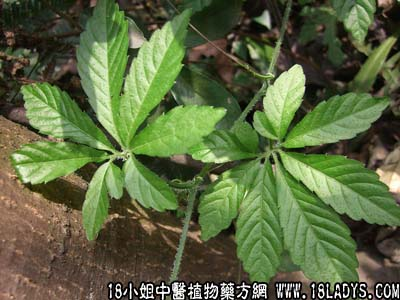

绞股蓝(中草药名称:七叶胆)(科目:葫芦科)

【中药概述】
绞股蓝为葫芦科草本植物绞股蓝的根状茎或全草。苦、寒。归肺、脾经。
1．祛痰止咳：用于肺热咳嗽，痰多，气促，慢性支气管炎，支气管哮喘等症。可单用，或入汤剂中服用。
2．养心安神：用于失眠、精神不安，有益气补脾作用。
【临证应用】
用治慢性气管炎。取七叶胆适量，每次3g，日服3次，10日为一疗程。
【药理作用】
用于慢性胃炎、传染性肝炎、高血压、糖尿病。还有防癌抗癌作用，对化疗和放疗后引起的细胞和血小板减少有增升作用。有增强体力机能，增强免疫的作用。
【化学成分】
含苏氨酸，蛋氨酸，亮氨酸，异亮氨酸，皂甙、其皂甙结构与人参皂甙极相似。
【用量用法】
本品8——16g，水煎服，或入丸散剂。